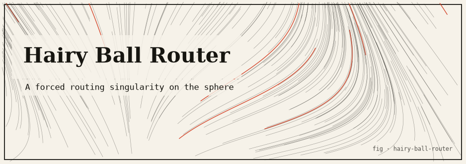

hairy-ball-router
Routes packets across the sphere S² by following a continuous tangent vector field — the Hairy Ball Theorem forces at least one zero, which becomes the destination sink.

The idea
The Hairy Ball Theorem (Brouwer, 1912) states that there is no continuous non-vanishing tangent vector field on a sphere S². In other words: you cannot comb a hairy ball flat without creating at least one whorl or cowlick. Every continuous vector field on S² must have at least one zero.
This package routes packets by following a continuous tangent vector field on S². The field has exactly one zero (by construction). Every packet follows the field gradient and converges to that zero — the mandatory “cowlick” that topology guarantees must exist. The routing algorithm is simply gradient descent on the sphere.
The mathematics
S² = { (x,y,z) : x² + y² + z² = 1 }
Tangent vector field V : S² → TS² (continuous, one zero at north pole)
V(θ,φ) = (-sin φ, cos φ, 0) (standard "comb" with zero at poles)
Routing: dP/dt = V(P) (follow field, projected onto tangent plane)
Packets converge to the zero of V (the sink node)
Hairy Ball Theorem: every continuous V on S² has ‖V(p)‖ = 0 for some p
→ the sink is mathematically guaranteed to exist
Run it
git clone https://github.com/caelum0x/awesome-mad-projects.git cd hairy-ball-router go test ./... go run . # Packet routed from (lat=45°, lon=30°) → sink at north pole # Steps: 142 Final distance to sink: 0.003 rad